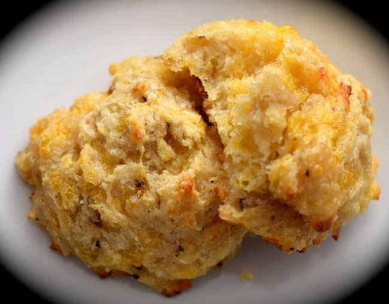

My Favorite Recipe
Cheddar Peppercorn Biscuits
Ingredients
- 2 cups all purpose flour
- 1 1/2 cups cake flour
- 2 tablespoons sugar
- 1 1/2 tablespoons baking powder
- 1/2 teaspoon baking soda
- 1 1/2 teaspoon kosher salt
- 1 tablespoon cracked pepper
- 1/2 lbs shredded cheddar cheese
- 2 cups buttermilk
Instructions
- Mix flours, sugar, baking powder, baking soda, salt, pepper, and cheddar
- Cut softened butter into the flour mix. Try not to overwork, leaving butter in small pieces.
- Stir in buttermilk carefully without overmixing just until mixture comes together.
- Flour surface, roll out, and cut biscuits.
- Bake at 375 on a lightly greased baking sheet for 15-18 minutes